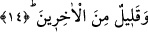

14. Birazı da sonrakilerdendir.
Yâni birazı da bu ümmettendir. Bu gerçek, Peygamberimiz (s.a.)’in, “Benim ümmetim
şübhesiz ki, diğer ümmetlerden çok olacaktır”[195] hadis-i şerifi ile çelişmez. Yâni,
sayıca çokluk bakımından benim ümmetim onlardan üstün ve çok olacaktır, demektir.
Çünkü geçmiş ümmetlerin “sâbıkun/öncekileri”nin bu ümmetin “öncekileri”nden çok
olması, bu ümmetin arkadan gelen tâbilerinin onların sonradan gelenlerinden çok
olmasına engel değildir. Mesela, onların öncekilerinden ikibin kişi, sonradan onlara
tâbi olup gelenlerin de bin kişi olduğunu farz edersek toplam üçbin kişi eder. Bu
ümmetin öncekilerini bin, sonrakilerini de üçbin kişi olduğunu farz edersek toplam
dörtbin kişi eder ve bu ümmetin sayısı diğerlerin toplam sayısından fazla olur.
Bir başka hadiste de: “Ben kıyâmet günü insanların içinde tâbii en çok olanım”[196]
buyrulmuştur. Bu hadis-i şerifi, “Bütün bunlar sağdakiler içindir. Bunların bir çoğu
önceki ümmetlerdendir. Bir çoğu da sonrakilerdendir” (el-Vâkıa 56/38-40) âyet-i
kerîmeleri red etmez. Çünkü her iki topluluğun kendi içindeki çokluğu, birinin
diğerinden fazla olmasına engel değildir. Yakında iki topluluğun da bu ümmetten
olduklarına dâir âyet gelecektir. Hadis merfu olarak rivayet edildiğine göre, gerek
öncekilerden ve gerekse sonrakilerden olan bu topluluklar, bu ümmet-i Muhammed’in
öncekilerinden ve sonrakilerindendir. Tercih edilen görüş budur. Bahru’l-ulüm’da da
böyle geçmektedir. Dolayısıyla öncekilerden maksad, ashâb-ı kirâm ve tâbiiler gibi
kişilerdir. Nitekim, bu âyet-i kerîme nâzil olunca Hz. Ömer (r.a.) ağladı. Bunun üzerine
de “Bunların bir çoğu önceki ümmetlerdendir. Bir çoğu da sonrakilerdendir” (el-
Vâkıa 56/39-40) âyet-i kerîmeleri indi.
Bir hadis-i şerifte, “Siz cennet ehlinin dörtte biri olmaya râzımısınız?” buyurdu. Biz
evet dedik. Efendimiz tekrar, “Siz cennet ehlinin üçte biri olmaya razımısınız?”
buyurdu. Biz yine evet dedik. Peygamberimiz (s.a.): “Nefsim kudret elinde olan Allah’
yemin ederim ki, sizin cennet ehlinin yarısı olacağınızı ümit ederim.”[197] Bu da, yâni
sizin cennet ehlinin yarısı olmanız, cennete müslüman olandan başkasının
girmeyişindendir. Yoksa sizin şirk ehline göre durumunuz, siyah bir öküzün derisindeki
beyaz bir tüy gibidir. Veya kırmızı bir öküzün derisindeki sıyah bir tüy gibidir. Bu
sebeple bu ümmetin tamamının cennete girmesi uzak bir ihtimal görülmemelidir.
Diğer bir hadis-i şerifte Peygamberimiz (s.a.) bu konudaki müjdeyi daha da ileri
götürerek, yarıdan üçte ikiye çıkardı ve: “Şübhesiz ki, cennet ehli yüz yirmi saf olup,
bu ümmet onlardan seksen saftır”[198] buyurdu.
Süheyli (r.h.) Kitâbü’t-târif ve’l-ilam adlı eserinde demiştir ki: Peygamberimiz (s.a.)
şöyle buyurdu: “Bizler (ehli kitaba nazaran) en sonra gelmişler (ken) kıyâmet